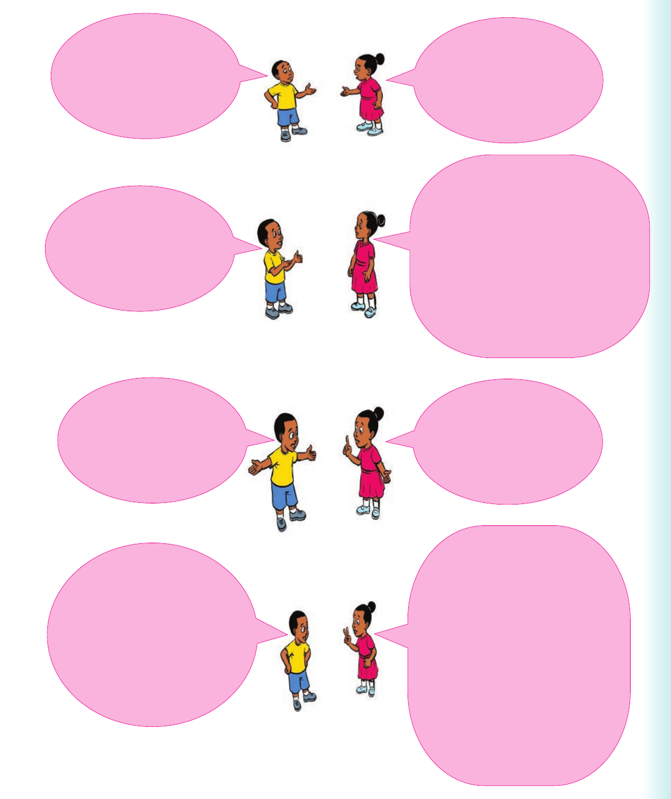

Narrating a road accident
2. Practise the following dialogue about a road accident:

Did you witness the accident? Yes, I was there. What did you see? I saw a bus coming from the other side of the road. Suddenly, it lost control and hit a tree. I see. Why did it lose control? One of its front tyres bust. That is very bad. What happened to the passengers? Two of them died on the spot. Several others were seriously injured. They were rushed to the hospital.